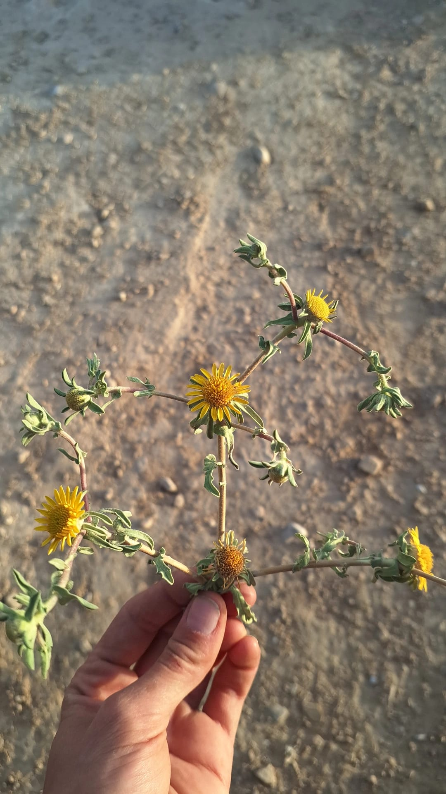

ידע מהאדמה ומהקליניקה
מאמרים וסרטונים
מדריכים שימושיים והדרכות קצרות על צמחי מרפא, ליקוט ורוקחות ביתית — לצד סיפורי צמחים, רגעים מן השטח ומפגשים עם אנשים שעוסקים בטבע, בריאות ומלאכות מסורתיות.

ידע מהאדמה ומהקליניקה
מדריכים שימושיים והדרכות קצרות על צמחי מרפא, ליקוט ורוקחות ביתית — לצד סיפורי צמחים, רגעים מן השטח ומפגשים עם אנשים שעוסקים בטבע, בריאות ומלאכות מסורתיות.